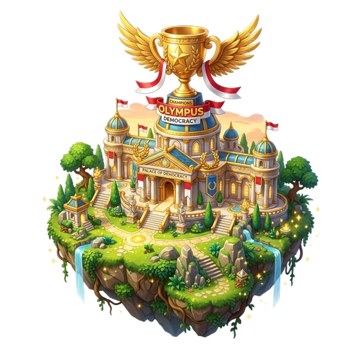
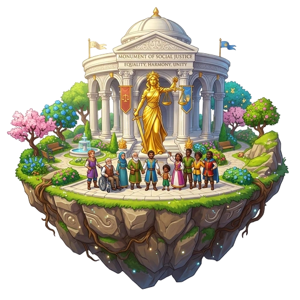
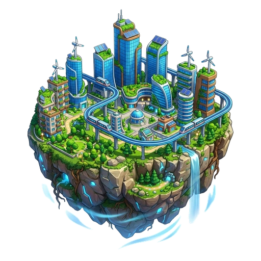
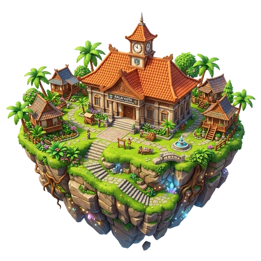
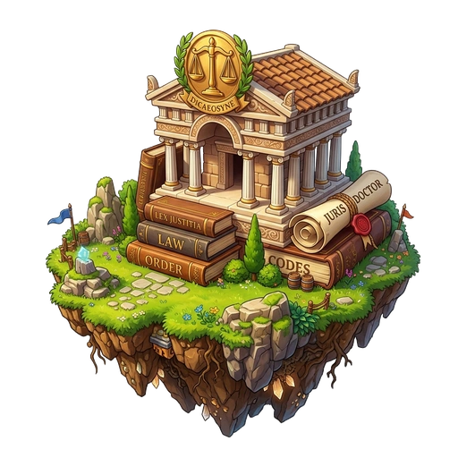
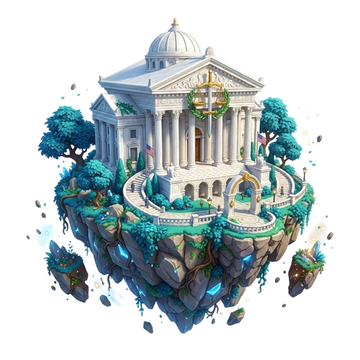
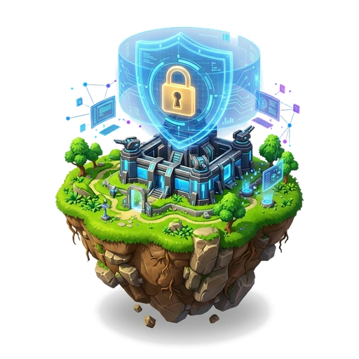

Progress Kamu
0 / 80

8
Master Demokrasi
Analisis kasus dan penerapan semua materi
🔒

7
Pejuang Keadilan Sosial
Kesetaraan kesempatan dan distribusi sumber daya
🔒

6
Arsitek Kemakmuran
Pembangunan berkelanjutan dan kesejahteraan masyarakat
🔒

5
Penggerak Daerah
Otonomi daerah dan pemberdayaan masyarakat
🔒

4
Ahli Hukum
Pendidikan hukum, akses keadilan, dan peradilan responsif
🔒

3
Penegak Keadilan
Independensi peradilan dan proses hukum yang adil
🔒

2
Pelindung Hak Asasi
Privasi, akses informasi, dan partisipasi publik
🔒
1
Penjelajah Demokrasi
Demokrasi, HAM, dan kebebasan berekspresi
▶
📌
Setiap langkah membawa perubahan untuk Indonesia!
LEVEL 1
Penjelajah Demokrasi
Topik: Demokrasi, HAM, dan kebebasan berekspresi
Pertanyaan 1 dari 1
Apa prinsip fundamental Demokrasi Pancasila dalam perumusan keputusan bersama demi keadilan sosial?
🎉
Jawaban Benar!
Musyawarah untuk mufakat adalah inti dari sila ke-4 Pancasila.
✨
Selamat datang di Peta 8 Level!